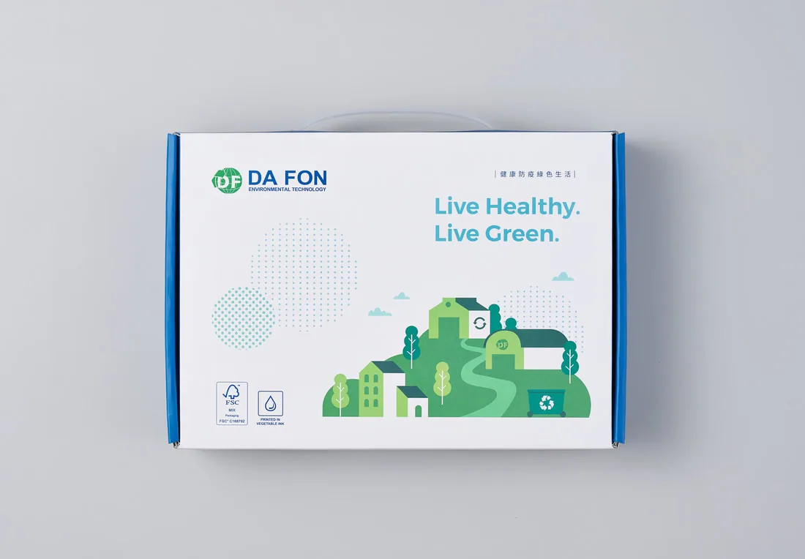
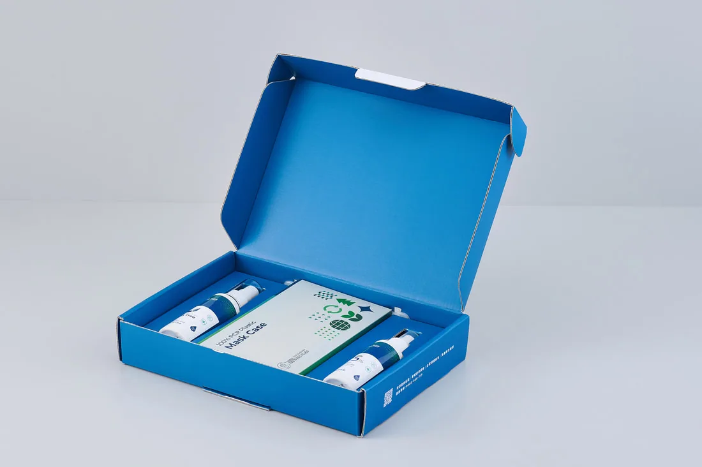
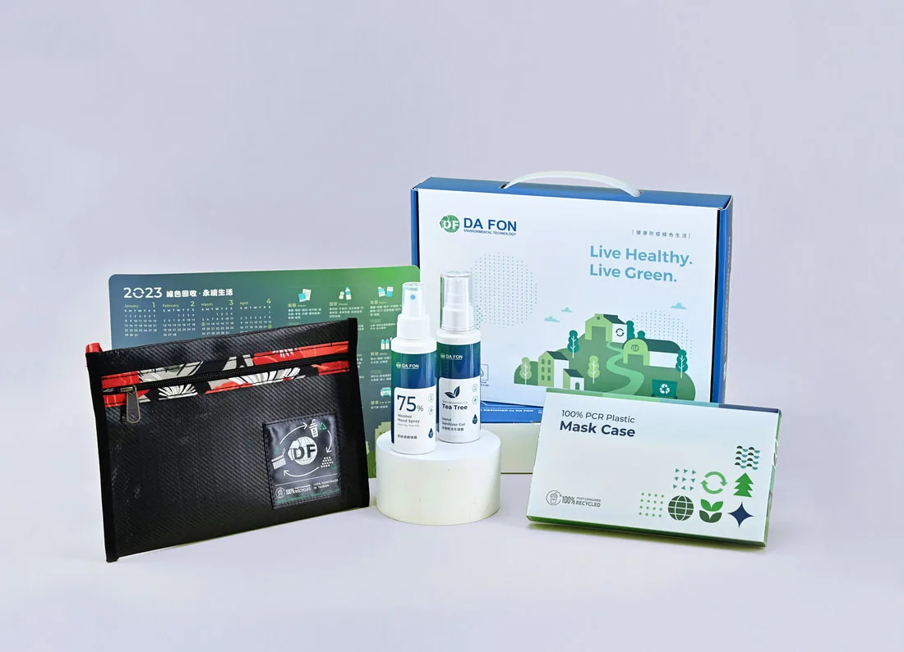
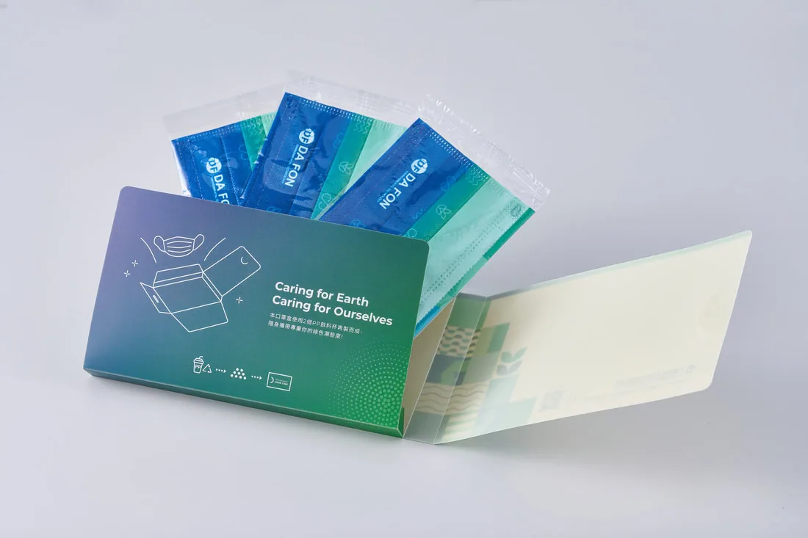
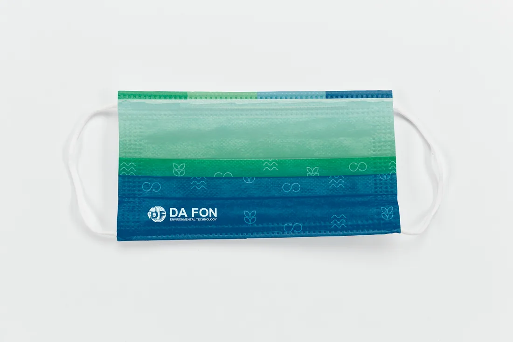
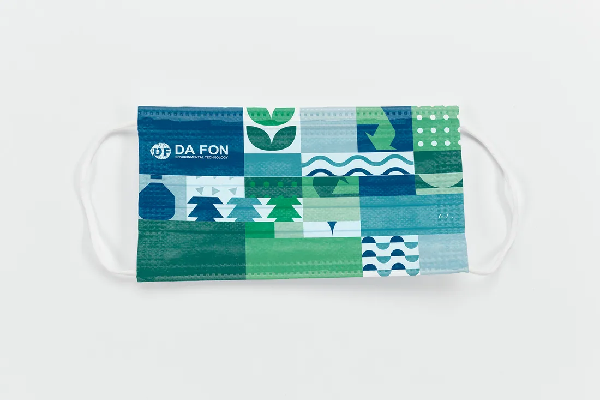

平面設計 ／ 包裝設計
2022大豐環保企業禮贈品
Design for Da Fon
2021~2022這段期間台灣因經歷新冠肺炎疫情嚴峻時刻，於2022年禮贈品企劃便以『健康防疫綠色生活』為開端，發展一系列綠色防疫產品，外包裝皆使用大豐環保100%再生PCR塑膠再製而成，以降低對環境所造成得負擔，關懷健康同時也能照顧到地球。
禮盒內容物：
- 再生PP口罩盒. -再生HDPE防疫噴霧、銀離子噴霧
- 再生PP年曆卡. -再生PP文具包(廢布邊料包邊＋客制織標)











